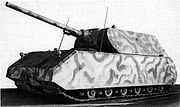

Maus
Немецкий тяжёлый танк десятого уровня. Самый бронированный и самый живучий танк в игре. Обладает орудием с высоким разовым уроном, посредственными точностью и бронепробиваемостью и долгой перезарядкой. Однако в силу крайне низкой подвижности и огромных размеров является лёгкой мишенью для САУ противника.
Модули:
- Башни/орудия
- Двигатели
- Ходовая часть
- Радиостанции
Maus в игре
Исследование и прокачка:
Тяжёлый танк Maus исследуется на Mäuschen за 219 660 Опыт. Танк приобретается сразу в «элитном» состоянии.
Боевая эффективность
Maus — весьма специфичный танк. Из-за крайне низкой подвижности он не может эффективно перемещаться по полю боя, реагируя на изменение ситуации в бою. Поэтому к выбору тактики и маршрута движения по карте следует подходить очень ответственно. Maus может использоваться как в обороне, так и в наступлении: Защита базы. Благодаря отличному бронированию и большому запасу прочности, Maus может сдерживать превосходящие силы противника на подступах к базе, пока союзники атакуют на других направлениях. Главный недостаток кроется в том, что наступающие союзники лишаются поддержки топовой машины и их атака может захлебнуться. В этом случае, противнику не составит большого труда разбить их, а затем расправиться с Маусом, используя численный перевес. «Стальной щит». Maus может использоваться в наступлении в качестве живого щита для союзников. Эта тактика особенно эффективна в городе, где действия артиллерии затруднены. Суть заключается в том, что Maus идёт первым, принимая на себя вражеские снаряды, а идущие следом за ним союзники прикрываются его мощным корпусом и ведут огонь по противнику. Следует отметить, что важность Мыши в бою сильно упала после появления ПТ-САУ 10 уровня. Орудия этих машин легко пробивают практически любую броню, а сам характер боёв изменился на более динамичный, а потому Maus с его посредственным орудием оказывается в невыгодном положении на поле боя.
Достоинства:
- достойная броня;
- самый большой запас прочности в игре;
- неплохой разовый урон;
- масса 190 тонн (данный фактор полезен при таране и блокировании прохода, а так же дает возможность установки сверхтяжёлого противоосколочного подбоя);
- низкая пожароопасность;
- большой боекомплект;
- неплохие углы склонения орудия;
- великолепная стабилизация орудия как при повороте башни, так и на ходу;
- хороший урон в минуту.
Недостатки:
- крайне низкие показатели скорости и маневренности;
- медленный поворот башни;
- огромные габариты.
Историческая справка
История танка Maus началась в конце 1942 года, когда по инициативе Гитлера начались работы над «танком прорыва» с максимально возможной бронезащитой. В создании машины приняли участие сразу несколько фирм: корпус и башню изготавливала фирма «Круп», «Даймлер-Бенц» отвечала за двигательную установку, а «Сименс» — за элементы трансмиссии. Общая сборка велась на заводе фирмы «Алкетт». Проект «тип 205», разработанный Фердинандом Порше, был частично реализован в 1944 году в виде двух опытных образцов танка «Маус». Дальнейшие работы по выпуску десяти серийных танков были прекращены по указанию самого Гитлера, так как у Германии не хватало производственных мощностей для выпуска других, более важных видов оружия. Полноразмерный деревянный макет танка был представлен Гитлеру 14 мая 1943 года, а первый прототип «Мауса», оснащенный авиационным двигателем «Даймлер-Бенц» МВ 509 и деревянной башней, поступил на ходовые испытания в декабре 1943 года. После их довольно удовлетворительных результатов танк был оборудован настоящей башней для артиллерийских стрельб и полным комплектом внутреннего оборудования. Второй недостроенный прототип был оборудован дизельным двигателем «Даймлер-Бенц» МВ 517, как оказалось, капризным и ненадёжным в эксплуатации. Масса 180 тонн исключала возможность перехода «Мауса» через реки по автодорожным мостам. Поэтому предполагалось переправлять танки попарно по дну реки. При этом загерметизированный, без экипажа, «Маус» получал по кабелю управление и электропитание для движения от другого «Мауса» на берегу. В бою эти танки испытаны не были. При приближении частей Красной Армии к полигону немцами было принято решение уничтожить прототипы ввиду невозможности их эвакуации. Оба танка были взорваны, но значительным разрушениям подвергся только один. В дальнейшем из обоих повреждённых танков по указанию командующего бронетанковых и механизированных войск был собран один; 4 мая 1946 года он был доставлен на полигон в Кубинке, где и находится в настоящее время в экспозиции Военно-исторического музея бронетанкового вооружения и техники. К сверхтяжёлому немецкому танку Maus также применялись наименования Panzerkampfwagen VIII «Maus» и Porsche 205.
